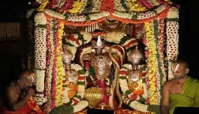

Maha Shivratri is a festival dedicated to Lord Shiva and is celebrated on the night of Krishna chaturdashi. People fast on this day and visit the temples to offer their prayer. A lot of shows and performances are organised in the temples at night. It is believed to be one of the oldest festivals of Andhra Pradesh. Time to visit: It is celebrated on the 13th or the 14th day of the dark half of Phalgun that falls mostly during the months of February or March Location: The Kalahasteshwara Temple and Bharamarambha Malikarjunaswamy Temple are two most important temple to offer prayers The festival of Dussehra is popularly known as Vijayadashami and Dasara in the south. Vijayadashami is celebrated for 10 days where people pay their respect to Goddess Durga. People of the state visit the temple of Goddess Durga and wear beautiful traditional attires. Another important aspect which people of this state follow is to set up the ‘Bommala Koluvu’ at their homes. This is a beautiful arrangement of dolls and toys. This 10 days festival is considered as one of the popular festivals in October in India.  This is a vastly celebrated Hindu festival at the Tirumala Venkateswara temple in Tirupati. The festival of Lord Brahma lasts for nine days every year in October. It is believed that Lord Brahma was the first to start this festival in the temple. Several rituals are followed during the nine festive days in Tirupati Tirumala Brahmotsavam. On the last day of Brahmotsav, a huge crowd comes to witness the bliss scenes of the procession of Lord Venkateswara which pass by several streets before reaching the temple. The process goes on till midnight and the scenes at Tirumala town are always breath-taking. Tirupati Tirumala Brahmotsavam is celebrated every year in the month of October.